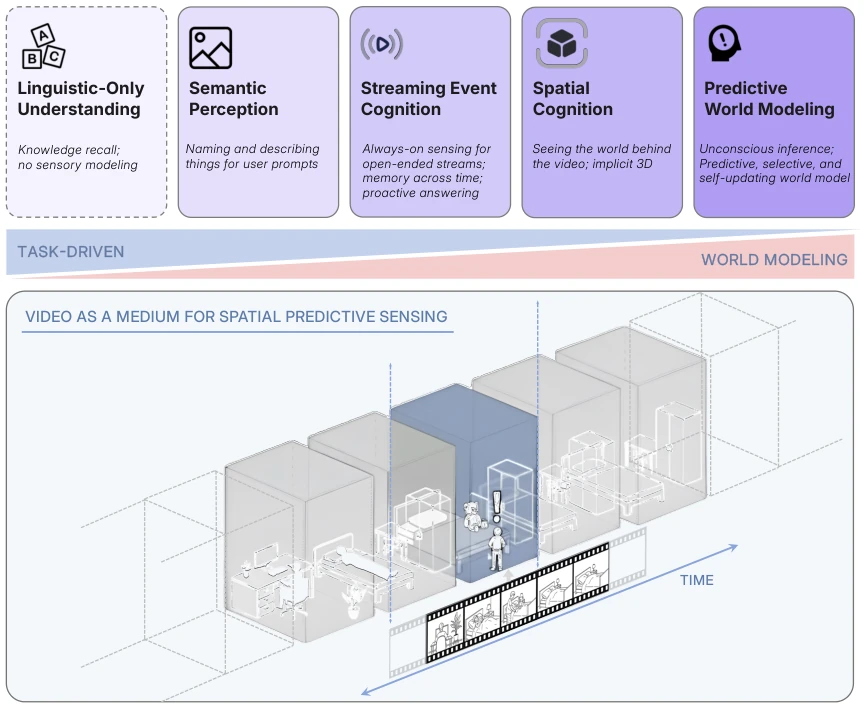
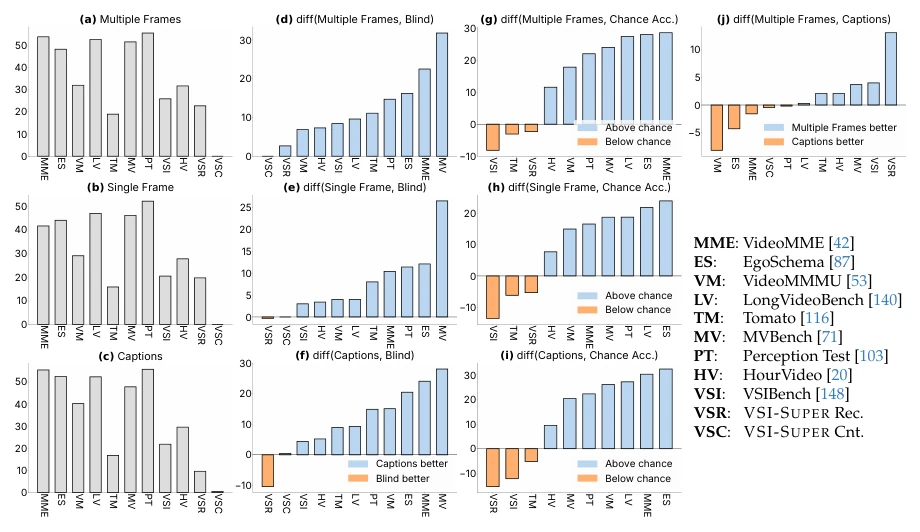
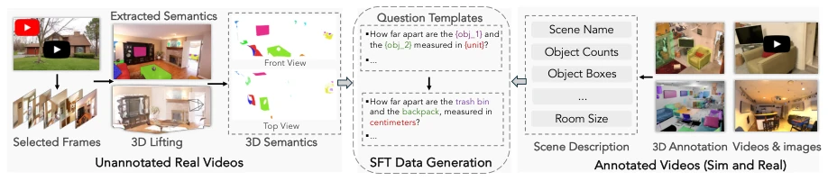
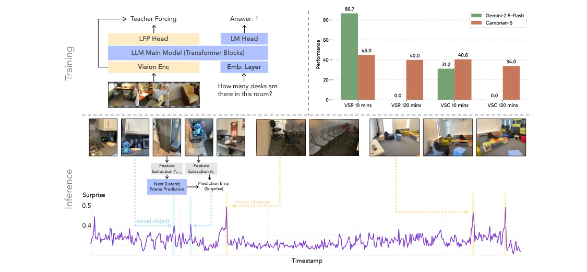
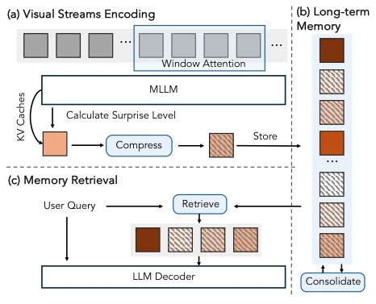
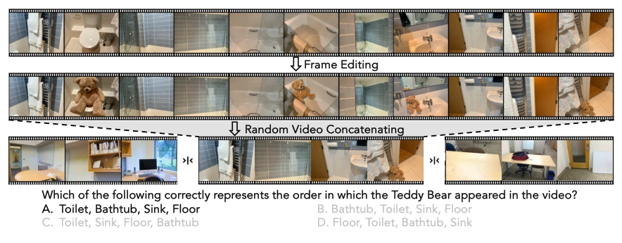
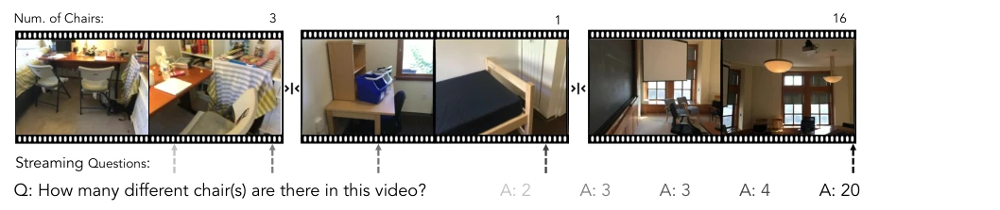
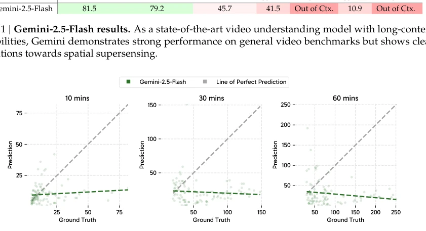
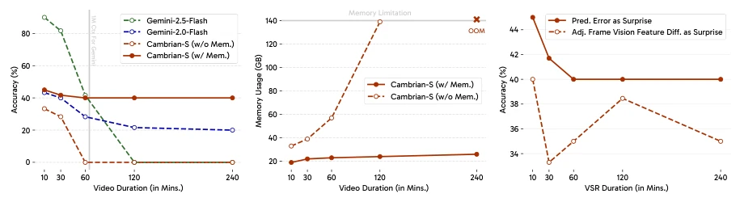
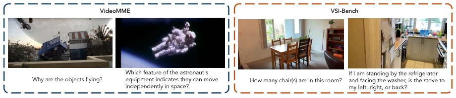

This paper attempts to upgrade video understanding from "image captioning" to "spatial super-sense"; the concept is highly appealing, yet practical implementation is somewhat challenging. The VSI-SUPER benchmark indeed hits the pain point of current large models: simply stacking context length cannot solve spatial memory issues in long videos; Gemini-2.5-Flash saturates directly on counting tasks, indicating the model did not "count" accurately at all. Cambrian-S improved by 30% on VSI-Bench, with data engineering being quite solid, but the final "predictive perception" is merely a Proof-of-Concept, far from a true world model. However, using "Surprise" to drive memory management is an interesting idea, at least smarter than brute-force expanding context. The authors admit scale is insufficient, which counts as honesty, but the term "super-sense" is too grand, easily leading to the misconception that the model possesses human-like spatial intuition; in reality, it remains at the stage of fitting statistical patterns, and computational efficiency optimization for long videos still relies on specific architectures rather than general capabilities.
Existing video benchmarks (e.g., VideoMME [42]) can mostly be solved by text summarization or single frames, lacking tests on real spatial reasoning. Although VSI-Bench [148] has made progress, videos are short and single-scene. Current MLLMs rely on language priors, lacking implicit modeling of the 3D world. Gemini-2.5-Flash [122] performs poorly on long video tasks, proving that simple scaling is ineffective. A paradigm capable of continuous perception, prediction, and information filtering is needed. Existing work mostly focuses on task-driven approaches, ignoring the value of video as a continuous sensory stream. Humans can utilize "surprise" signals to optimize memory, while models still passively receive all frames, leading to low efficiency and inability to generalize to long-term tasks. Furthermore, existing benchmarks struggle to distinguish whether models truly understand space or utilize language shortcuts, urgently requiring stricter testing protocols.

Figure 1 | From pixels to predictive mind. We look beyond linguistic-only understanding to envision multimodal intelligence that sees, remembers, and reasons as part of a continuous, lived world. It begins with semantic perception: naming and describing what is seen. Streaming event cognition goes further, enabling always-on sensing across continuous input streams, integrating memory, and supporting proactive responses. Spatial cognition captures the implicit 3D structure of video, enabling reasoning about objects, configurations, and metrics. Finally, a predictive world model emerges, one that learns passively from experience, updates through prediction and surprise, and retains information for future use. Lower illustration: Video serves as the ideal experimental domain. Models must adva

Figure 2 | Benchmark diagnostic results reveal varying dependence on visual input. We evaluate model under distinct input conditions: (a) multiple (32) uniformly sampled frames, (b) a single (middle) frame, and (c) frame captions, benchmarked against chance-level and blind test results (visual input ignored). Panels (a–c) show absolute accuracies; panels (d–j) show performance differences between conditions. Visual inputs are substantially more critical for VSI-Bench [148], Tomato [116], and HourVideo [20], while their impact is less pronounced for VideoMME [42], MVBench [71], and VideoMMMU [53]. VSR and VSC are new supersensing benchmarks introduced in Sec. 2.2.
Overall divided into four stages: 1. Upgrade Cambrian-1 base (SigLIP2 + Qwen2.5); 2. Construct VSI-590K dataset (real/simulated/pseudo-labeled); 3. General video instruction tuning; 4. Spatial perception tuning. The core innovation is "predictive perception": calculating prediction error (Surprise) via self-supervised Next-Latent-Frame Prediction, used for memory compression and event segmentation. This allows the model to retain only key information in long video streams, rather than brute-force storing all frames. In terms of data, VSI-590K integrates 3D-labeled real videos (e.g., ScanNet), simulated data (ProcTHOR), and web video pseudo-labels, covering various spatial task types. During training, general video data is mixed to prevent overfitting. The predictive perception module calculates latent frame prediction error during inference; high-error frames are marked as "surprise", triggering memory updates or event segmentation, thereby achieving long-term memory management. This framework does not rely on a fixed context window, but dynamically filters information, significantly reducing VRAM usage.

Figure 7 | VSI-590K data curation pipeline. We collect data from 3D-annotated real and simulated video sources, as well as from pseudo-annotated frames extracted from web videos. We then use diverse templates to automatically generate question–answer pairs for instruction tuning.

Figure 9 | Training and inference pipeline for the latent frame prediction (LFP) approach. Our model employs a Latent Frame Prediction (LFP) head to predict the next frame in latent space. During training, the LFP head predicts the latent representation of the subsequent video frame. During inference, the model measures surprise by computing the cosine distance between the LFP head’s prediction and the actual latent features of the subsequent frame. The surprise signal exhibits distinct spikes for events such as the sudden appearance of unusual objects and abrupt scene changes. Our predictive-sensing prototype allows Cambrian-S to generalize to longer videos on VSI-SUPER, outperforming frontier models (e.g., Gemini-2.5-Flash) that rely solely on context length expansion.

Figure 10 | Surprise-driven memory management framework design. The proposed memory system (a) encodes incoming visual streams, compressing frames with low surprise; (b) performs consolidation when memory is full by dropping or merging the least surprising frames; and (c) retrieves relevant frames during query answering. Color shading (dark→light) reflects the degree of surprise, with hatched boxes denoting compressed frames and solid boxes representing uncompressed ones.
Trained Cambrian-S using VSI-590K, achieving a 30% improvement on VSI-Bench. VSI-SUPER includes VSR (long-term recall) and VSC (continuous counting). Gemini-2.5-Flash saturates on counting in VSC. The predictive perception prototype outperforms Gemini on VSI-SUPER. Ablation studies show Surprise signals are more robust than frame similarity. VSI-SUPER is designed for arbitrary long videos, resisting brute-force context expansion. Cambrian-S performs SOTA on VSI-Bench, but remains limited on VSI-SUPER, indicating data scale is not the only bottleneck. Experiments prove that simply increasing context length cannot solve long video spatial reasoning problems; a prediction mechanism must be introduced.

Figure 4 | Illustration of the VSR benchmark’s construction process and format. We use generative models to edit videos by inserting surprising or out-of-place objects into the space. The core task then challenges models to recall the spatial placements of these objects in the correct order of their appearance across arbitrarily long videos.

Figure 5 | Overview of the VSC benchmark. The benchmark evaluates counting capabilities on long-horizon, multi- room videos composed of concatenated scenes. Queries are posed at various time points to simulate a streaming question-answering setting.

Figure 6 | Visualization of Gemini-2.5-Flash’s predictions v.s. ground truth on VSC. The model’s predicted object counts saturate at small constant values and fail to scale with video length or true object counts, indicating limited generalization in counting and reliance on training distribution priors.

Figure 11 | Performance analysis of surprise-driven memory on VSR. (a) Surprise-driven memory allows Cambrian-S to maintain strong performance as video length increases. (b) Surprise-driven memory maintains a stable GPU memory footprint as video length increases. (c) Ablation: Using LFP prediction error as the surprise signal is more robust and consistently outperforms using adjacent-frame similarity.
其他图片Other Figures

Figure 3 | Illustrations of how spatial sensing is conceptualized in current video benchmarks. The left panel features examples from the “spatial reasoning” subcategory of VideoMME [42], including a question regarding gravity from Shutter Authority’s “What if the Moon Crashed into the Earth?” and a question regarding astronaut gear from NASA’s “Astronaut Bruce McCandless II Floats Free in Space.” In contrast, the right panel shows samples from VSI-Bench [148], which highlight visual- spatial reasoning tasks such as object counting, identifying relative directions, route planning, and more.